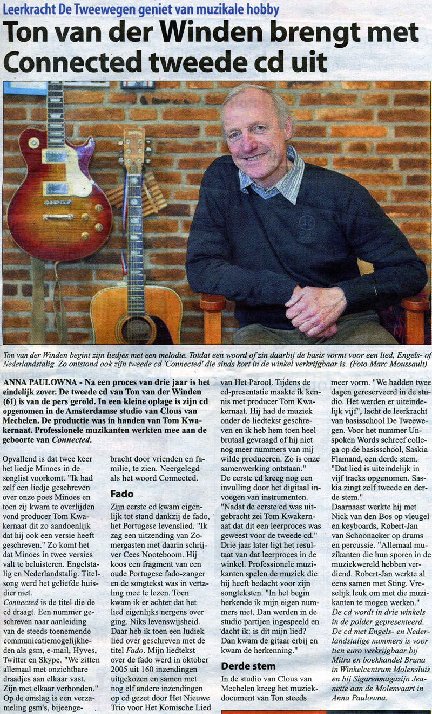
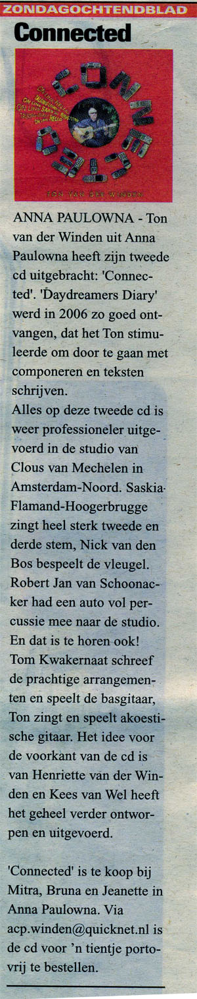
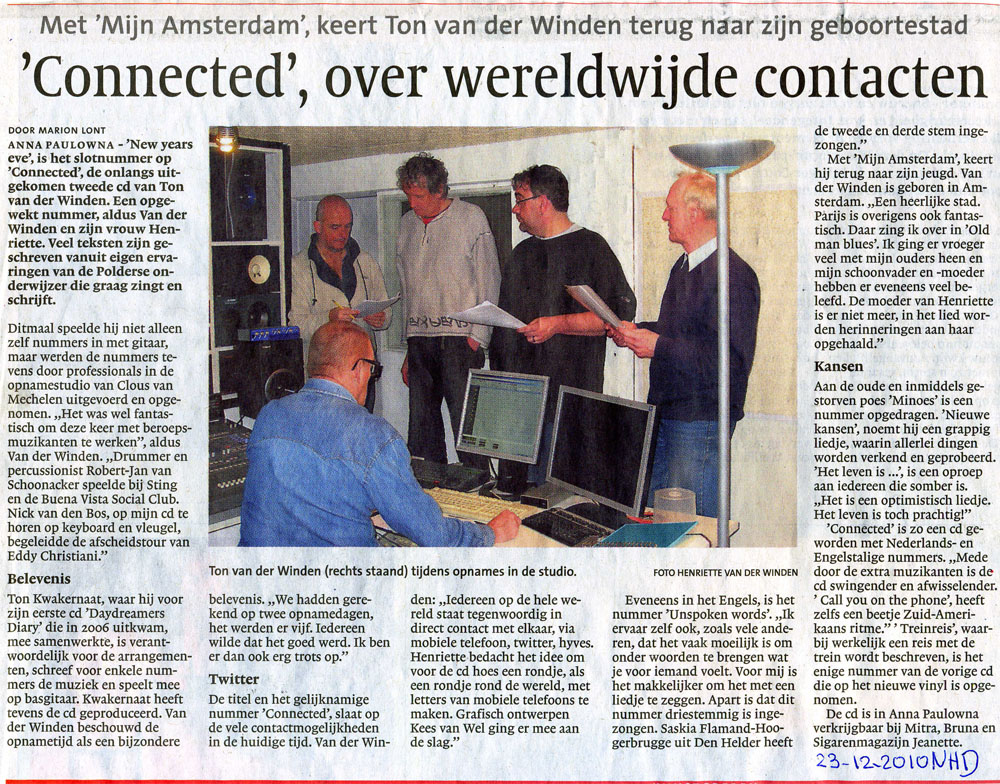
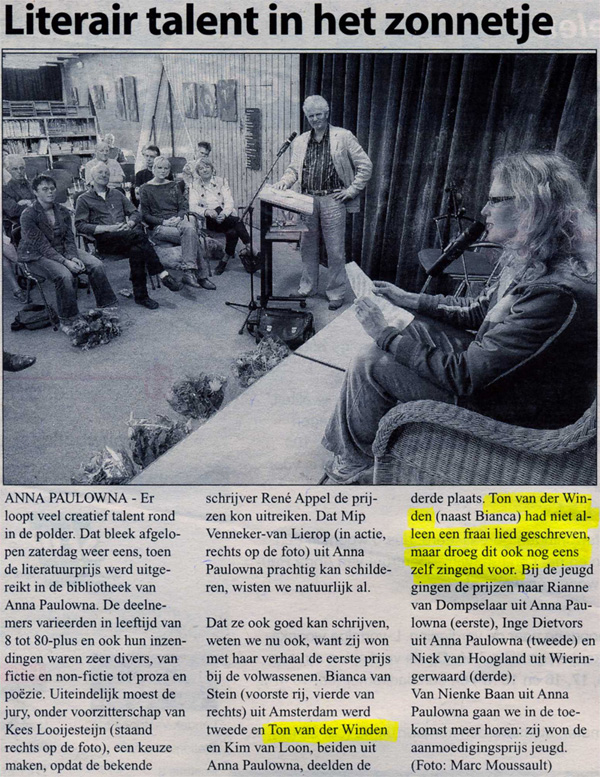
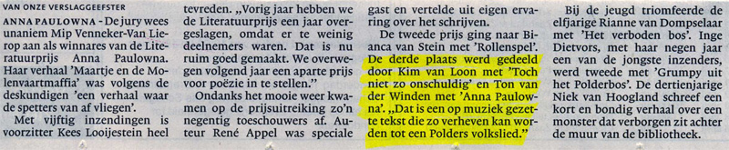
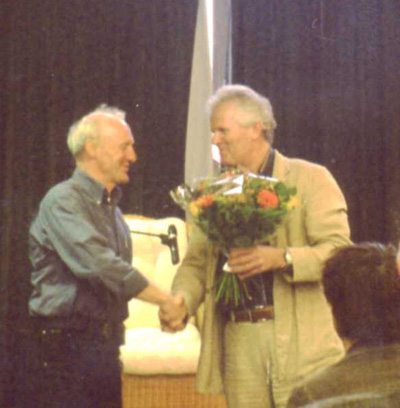
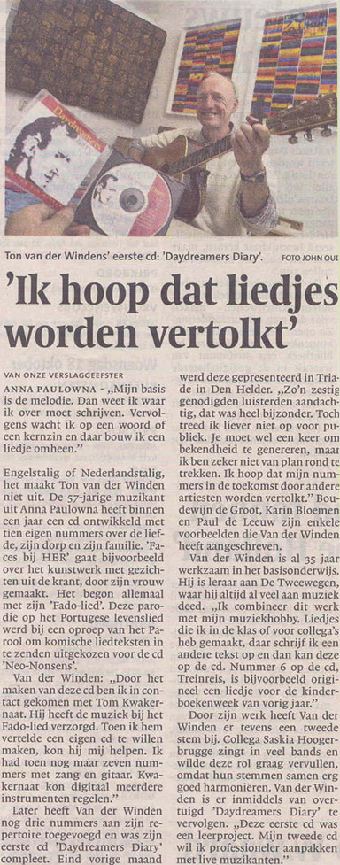
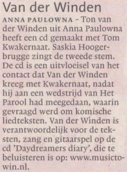

Pers
CTR/Polderbode 08-12-2010
Zondagochtendblad 05-12-2010

NHD 23-12-2010

ParaPlus, personeelsblad van de Stichting Surplus mei 2007, door Monique Ooms
JIJ BENT UM
Ton van der Winden is leerkracht van groep 4 op De Tweewegen. Muziek speelt een belangrijke rol in zijn lessen.
Liedjes schrijven is al jaren een grote hobby van hem, alleen maakte hij maar zelden iets af.
Totdat hij een lied schreef voor zijn vertrekkende collega Geert van Dijk. Sindsdien neemt Ton’s muzikale bestaan
een ware vlucht.
‘Er zit altijd een liedje in mijn hoofd.’
Ton’s gitaar staat altijd in de klas; hij werkt graag met muziek in zijn lessen. “Muziek brengt een mens in balans. Met een muziekinstrument kun je bovendien een mooi sfeertje creëren, het is gelijk een beetje feest in de klas. Tegenwoordig maak ik bij elke gelegenheid een lied: van de Kinderboekenweek tot de schoolreis. Dat geeft het thema een extra dimensie.” Zodra Ton had ervaren dat hij wel degelijk een lied kan afmaken, kreeg hij de smaak te pakken. Toen zijn liedtekst over de fado ook nog eens werd opgenomen op een cd met humoristische liedjes van Het Nieuwe Trio, ging het balletje echt rollen. Inmiddels is zijn eerste cd uit: Daydreamers Diary. “Ik zong de teksten in met collega Saskia Hoogerbrugge, zij zingt in een band.”
Geen noot lezen
De cd-presentatie leverde de nodige media-aandacht op.
Inmiddels is er een website (www.musictowin.nl) en heeft Ton plannen voor een volgende cd.
Muziek wordt steeds belangrijker in zijn leven. “Terwijl ik geen noot kan lezen, ik ken niet heel veel akkoorden.
In mijn hoofd ontstaat een melodie en daar bedenk ik een tekst bij.
De kunst is om met zo weinig mogelijk woorden beelden te maken. Je moet niet teveel willen vertellen.
Er zit altijd een liedje in mijn hoofd.” Ton droomt er niet van om zijn baan als leerkracht op te geven en rijk te
worden van zijn muziek.
“Ik zou het al geweldig vinden als een artieste als Karin Bloemen mijn liedjes zou willen vertolken.
” Over wie ‘um’ de volgende keer is: “Rogier van Dijk. Hij was laborant en is nu leerkracht op De Zandhorst.
Wat ziet hij als het grootste verschil in werkklimaat tussen het bedrijfsleven en het onderwijs?”

CTR Polderbode - 18-04-2007

NHD - 17-04-2007


NHD/Schager Courant - 17-10-2006

NHD - 26-09-2006
